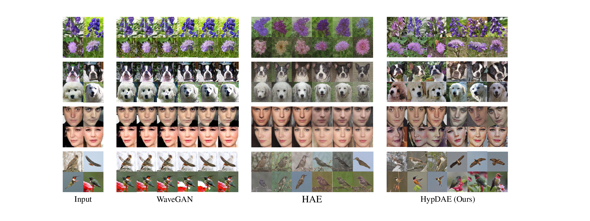
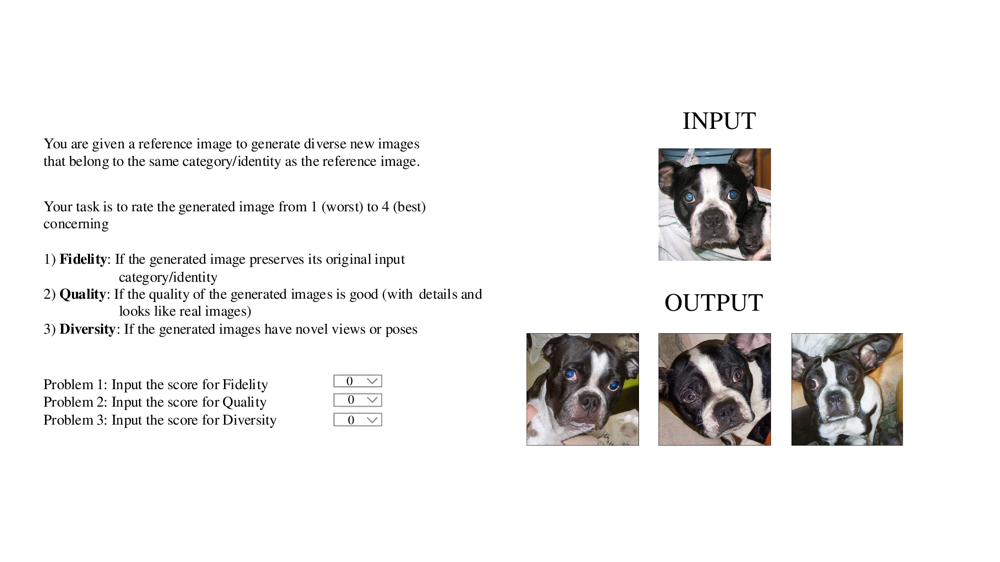

HypDAE: Hyperbolic Diffusion Autoencoders for Hierarchical Few-shot Image Generation
Lingxiao Li1,2 Kaixuan Fan1 Boqing Gong2* Xiangyu Yue1*
1MMLab, The Chinese University of Hong Kong 2Boston University
Illustration of hierarchical text-image representation in hyperbolic space. Hyperbolic space provides a natural and compact encoding for semantic hierarchies in large datasets. Adjusting high-level, identity-relevant attributes alters an image's identity, while modifying low-level, identity-irrelevant attributes produces variations within the same identity.
[Paper]
[Code]
[BibTeX]
Abstract
Few-shot image generation aims to generate diverse and high-quality images for an unseen class given only a few examples in that class. A key challenge in this task is balancing category consistency and image diversity, which often compete with each other. Moreover, existing methods offer limited control over the attributes of newly generated images. In this work, we propose Hyperbolic Diffusion Autoencoders (HypDAE), a novel approach that operates in hyperbolic space to capture hierarchical relationships among images from seen categories. By leveraging pre-trained foundation models, HypDAE generates diverse new images for unseen categories with exceptional quality by varying stochastic subcodes or semantic codes. Most importantly, the hyperbolic representation introduces an additional degree of control over semantic diversity through the adjustment of radii within the hyperbolic disk. Extensive experiments and visualizations demonstrate that HypDAE significantly outperforms prior methods by achieving a better balance between preserving category-relevant features and promoting image diversity with limited data. Furthermore, HypDAE offers a highly controllable and interpretable generation process.
Introduction
Generative models have succeeded in generating high-fidelity and realistic images, partially thanks to a large volume of high-quality data for model training. However, with the widespread presence of long-tail distributions and data imbalances across image categories, there are many scenarios in the real world where it is impossible to collect sufficient samples of certain categories for model training. It is difficult for generative models trained on well-sampled categories to generate realistic and diverse images for a novel category given only a few examples. This challenging task is known as few-shot image generation, which aims to synthesize images that preserve the category-level identity of the limited input samples.
Existing few-shot image generation methods are primarily GAN-based and fall into three categories: transfer-based approaches, which use meta-learning or domain adaptation for cross-category generalization but often face limited transferability; fusion-based approaches, which fuse features from multiple exemplars but tend to produce outputs overly similar to the inputs; and transformation-based approaches, which apply intra-category perturbations without fine-tuning but often lack diversity. Recent diffusion-based methods for object-level personalization focus on instance identity, require test-time fine-tuning, and depend on prompt engineering, making them incompatible with our category-level setting without textual inputs or model updates.
To address these limitations, we propose HypDAE (Hyperbolic Diffusion Autoencoders), which leverages the unique properties of hyperbolic space to model hierarchical semantic relationships in few-shot image generation. Our method operates in hyperbolic space to capture both identity-relevant features (to maintain category consistency) and identity-irrelevant features (to enhance diversity), providing unprecedented control over the generation process through hierarchical semantic editing.

Overview of the HypDAE framework showing the hyperbolic diffusion autoencoder architecture for hierarchical few-shot image generation.
Method
To generate diverse new images from a few reference images while preserving their identity, it is essential for our model to capture both identity-relevant features (to maintain identity) and identity-irrelevant features (to enhance diversity). To achieve this, we design a diffusion autoencoder that extracts elementary identity-relevant features via a semantic encoder and identity-irrelevant features via a stochastic encoder. Furthermore, a hyperbolic encoder-decoder is introduced to further disentangle high-order semantic features.
Hierarchical Learning in Hyperbolic Space
A key challenge in multi-level semantic editing is deriving a hierarchical representation from real images. To address this, we utilize hyperbolic space as the latent space, given its suitability for hierarchical structures. Unlike Euclidean spaces (zero curvature) or spherical spaces (positive curvature), hyperbolic spaces exhibit negative curvature, making them ideal for modeling hierarchical data. As a continuous analog of trees, hyperbolic space enables hierarchical representation through its exponential radius growth, facilitating structured modeling across text, images, and videos.

Illustration of feature fusion in hyperbolic space showing how semantic and stochastic features are combined.
Hyperbolic Diffusion Framework
Our HypDAE framework integrates hyperbolic representations into diffusion models through a carefully designed architecture that enables stable training and generation. The hyperbolic embeddings serve as diffusion conditions, enabling scalable and interpretable few-shot generation with explicit control over semantic hierarchies.
Results
We evaluate HypDAE on standard few-shot image generation benchmarks and demonstrate significant improvements over existing methods. Our approach achieves superior performance in terms of both image quality and diversity metrics while providing unprecedented control over the generation process.
Few-shot Generation Results
HypDAE generates high-quality, diverse images that preserve category identity while introducing meaningful variations. The hierarchical control in hyperbolic space allows fine-grained manipulation of semantic attributes.
Examples of hierarchical few-shot image generation showing controllable semantic diversity.
Comparison with State-of-the-Art Methods
Quantitative and qualitative comparisons demonstrate that HypDAE significantly outperforms existing few-shot generation methods across multiple datasets and evaluation metrics.

Comparison with state-of-the-art few-shot image generation methods showing superior quality and diversity.
Controllable Generation
One of the key advantages of HypDAE is its ability to provide fine-grained control over the generation process through hyperbolic semantic editing. By adjusting the radius and position in hyperbolic space, users can control the level of semantic diversity and specific attributes of generated images.

Demonstration of controllable generation with varying semantic diversity levels.
Out-of-Distribution Generalization
HypDAE demonstrates strong generalization capabilities on out-of-distribution data, successfully generating high-quality images for unseen categories that differ significantly from the training distribution.
Out-of-distribution generation results showing robust generalization capabilities.
Ablation Studies
We conduct comprehensive ablation studies to analyze the contribution of each component in HypDAE. The studies demonstrate the importance of hyperbolic space representation and the effectiveness of our hierarchical semantic control mechanism.
Component Analysis
Ablation study on the key components of HypDAE, showing the importance of hyperbolic representation and hierarchical semantic encoding for few-shot generation quality.

Ablation study results for generation components.
Semantic Editing Ablation
Analysis of different levels of semantic control and their impact on generation quality and diversity.
Ablation study on semantic editing capabilities.
User Study
We conduct comprehensive user studies to evaluate the quality and controllability of HypDAE's generated images. Human evaluators consistently rate HypDAE-generated images higher in terms of quality, diversity, and semantic consistency.

Results from user study evaluations showing superior performance across multiple metrics.
Interpolation and Semantic Editing
HypDAE enables smooth interpolation in the hyperbolic latent space, allowing for continuous semantic editing and morphing between different identities while maintaining image quality.
Smooth interpolation results in hyperbolic space demonstrating controllable semantic editing capabilities.
BibTeX
@article{li2024hypdae,
title={HypDAE: Hyperbolic Diffusion Autoencoders for Hierarchical Few-shot Image Generation},
author={Lingxiao Li and Kaixuan Fan and Boqing Gong and Xiangyu Yue},
journal={arXiv preprint arXiv:2411.17784},
year={2024}
}
Acknowledgements: We thank DreamBooth for the page templates.